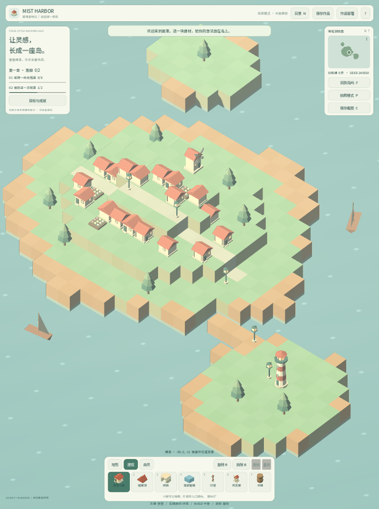
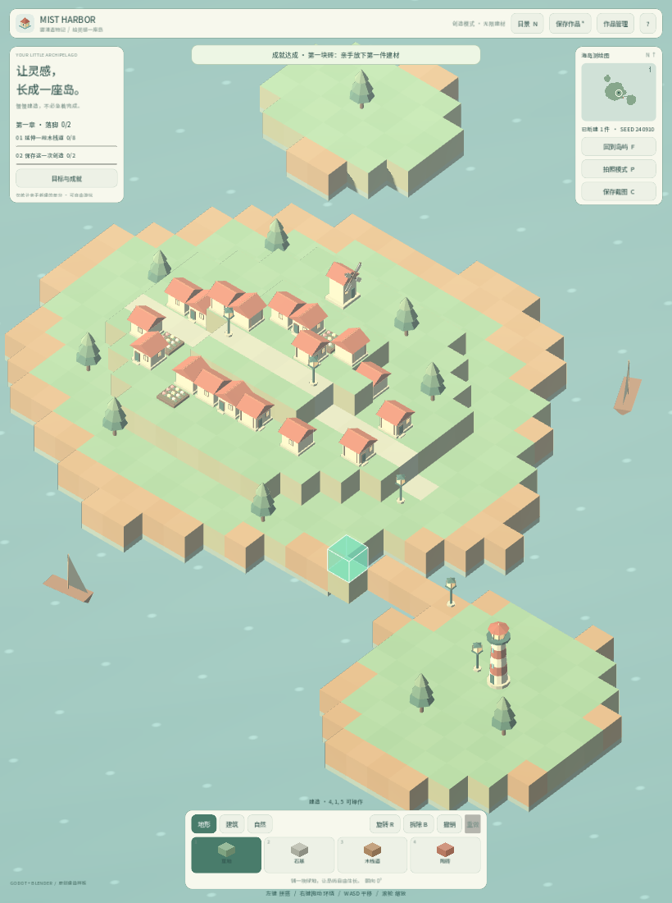

卷 5 · 第 27 章 移动端：为什么"能跑"和"能上線"差着一个量级
本章目标：客观评估 Android / iOS 的可行性——
技术上要准备什么、体验上要改什么，以及当前为什么选择"先不做"。
对应任务：T28 | 对应文件：project/docs/requirements.md
27.1 先说结论
| 平台 | 现状 | 判断 |
|---|---|---|
| --- | --- | --- |
| Android | 技术上可行，需装 JDK 17 + Android SDK cmdline-tools + Gradle + 编辑器内安装构建模板 | 做，但要投入 |
| iOS | 需要 macOS + Xcode | 本机做不了，需 Mac 或 CI |
| Web | 已完成（第 25 章） | ✅ 首选 |
| Windows | 已完成（第 26 章） | ✅ |
本实训的取舍：Web + Windows 先行，移动端作为"第二阶段"。
理由不是技术不可行，而是体验改造的工作量被严重低估。
27.2 技术门槛（Android）
1. JDK 17（版本不对会直接失败）
2. Android SDK command-line tools
3. Gradle 构建
4. Godot 编辑器内安装「Android 构建模板」（首次会联网下载数百 MB）
5. 新增 export preset：Android，填包名 / 版本 / 图标 / 权限这些都是"一次性但必须有人做"的成本。 做好之后导出就是一条命令。
27.3 真正的工作量在体验
Web 版是"键鼠 + 1440×900"，移动端完全不同：
| 维度 | 桌面 | 移动端要改什么 |
|---|---|---|
| --- | --- | --- |
| 输入 | 左键放置 / 右键旋转 / 中键平移 / 滚轮缩放 | 触屏手势：单指点击放置、双指缩放、拖拽旋转/平移 |
| UI | 面板在四角，字号小 | 触控热区 ≥ 44px、面板可折叠、字号上调 |
| 性能 | 桌面 GPU | 移动 GPU + 发热降频 → 需控面数、控 Draw Call |
| 存档 | 本地文件 / IndexedDB | 沙盒目录；后台被杀要能恢复 |
| 生命周期 | 关闭即结束 | NOTIFICATION_APPLICATION_PAUSED/RESUMED 要处理 |
| 返回键 | 无 | NOTIFICATION_WM_GO_BACK_REQUEST——第 23 章的 flush 就靠它 |
📌 每一条都是独立的改造项，加起来才是移动端的真实成本。
Web 端之所以先做，是因为它复用桌面交互，只需处理平台差异。
27.4 现在就能做的"移动端友好"准备
即使暂不上架，下面这些改动现在做成本最低：
| 准备 | 说明 |
|---|---|
| --- | --- |
| 响应式布局 | _layout() 已按视口计算，加断点即可适配平板（第 11 章） |
| canvas_resize_policy=2 | 已设（第 25 章），Web 端在平板上已可用 |
| theme-color | 已设，移动端浏览器观感一致 |
| 返回键/暂停钩子 | 成就 flush 已挂 WM_GO_BACK_REQUEST（第 23 章） |
| 触控事件 | Godot 会把触屏映射为鼠标事件 → 基础操作已可用，只是多指手势缺失 |
客观结论：当前 Web 版在平板上已经能玩（单指 = 点击放置），
缺的是多指缩放/旋转与专门的触控 UI。
27.5 如果要排期，我建议这样拆
阶段 1（1–2 天）：装 Android 工具链，出一个能跑的 apk（不碰 UI）
阶段 2（2–3 天）：触控手势（双指缩放、拖拽旋转/平移）
阶段 3（2–3 天）：触控 UI（热区、折叠面板、字号）
阶段 4（1–2 天）：生命周期（暂停/恢复/后台被杀）与存档健壮性
阶段 5（持续）：真机性能调优（面数、Draw Call、发热）每一步都能独立验收，不会出现"做了两周还是跑不起来"。
🌩 在云端 agent（web-cb）里是什么样
| 🖥 本地路线 | 🌩 云端 agent（web-cb） | |
|---|---|---|
| --- | --- | --- |
| Android 工具链 | 本地装 JDK/SDK/Gradle | 云端镜像可预置 → 这是云端最大的优势之一 |
| 构建 apk | 本地跑 | 云端构建 + 产物归档（下载到真机安装） |
| 真机验证 | 本地连手机 | 云端做不到 → 必须人工 |
| iOS | 本机不行 | 云端也不行（需 macOS 环境/专用 CI） |
| 建议 | — | 把云端当作"移动端构建机"，真机验证留在本地 |
🌩 云端对移动端最有价值的用法：免去每人配置 Android 工具链——
一次配好镜像，团队共用，产物直接下载安装。
27.6 常见坑速查（本章）
| 现象 | 原因 | 处理 |
|---|---|---|
| --- | --- | --- |
| Gradle 构建失败 | JDK 版本不对 | 用 JDK 17 |
| 缺构建模板 | 编辑器内没装 | 编辑器 → 安装 Android 构建模板 |
| 触屏能点但不能缩放 | 没做多指手势 | 阶段 2 |
| 按钮点不中 | 热区太小 | ≥44px |
| 切后台回来白屏 | 没处理 RESUMED | 阶段 4 |
| 返回键丢存档 | 没接 WM_GO_BACK | 已在成就里处理，其它写入同样要接 |
| 手机发热卡顿 | 面数/Draw Call 高 | 阶段 5（实例化、合并） |
27.7 本章作业
- 列出 Android 出包需要的四五项工具链，并说明哪一步最容易卡住
- 说出移动端相对桌面要改的六个维度，指出其中哪两个最容易被低估
- 说明为什么"Web 版在平板上已经能玩"，以及还缺什么
- 给自己的项目写一份五阶段移动端排期（每阶段要有可验收产出）
🎓 教学提示（给教师 / 直播主）
- 概念锚点：平台移植的成本在交互与生命周期，不在编译。
- 课堂演示：用浏览器的设备模拟切到平板视口，展示"已经能玩，但很难操作"。
- 高频误解：学生以为"导出个 apk 就算支持移动端"。用六个维度纠正。
- 讨论题：如果只能做一端，你选 Web 还是 Android？为什么？
- 批改要点：作业 2 最容易被低估的通常是"输入手势"与"生命周期"。
🖼 本章图集


📹 录屏分镜（9 分钟）
| 时间 | 画面 | 解说词要点 |
|---|---|---|
| --- | --- | --- |
| 00:00–01:20 | 四平台现状表 | "能跑 ≠ 能上线。" |
| 01:20–02:30 | Android 工具链清单 | "一次性，但必须有人做。" |
| 02:30–05:00 | 六个体验维度逐条 | "真正的成本在这里。" |
| 05:00–06:30 | 现在就能做的准备（平板演示） | "其实已经能玩了。" |
| 06:30–09:00 | 五阶段排期 + 作业 |
🎬 视频位（待录制）
把录好的视频放到course/media/video/27/（mp4 / webm / mov），重新执行 python tools/course_build.py 即会自动内嵌；首帧默认用本章第一张截图作为封面。分镜脚本见上一节。🖼 配图清单
| 文件名 | 内容 | 生成方式 |
|---|---|---|
| --- | --- | --- |
27-tablet-view.png | 平板视口下的游戏（响应式已生效） | python tools/course_capture.py --chapter 27 |
27-touch-build.png | 平板视口下的建造操作 | 同上 |
🎥 直播脚本（L3 片段，12 分钟）
- 开场："导出 apk 要多久？"——答：一天；"让它在手机上好玩要多久？"——答：一周
- 演示：浏览器切平板视口，展示"能玩但难操作"
- 互动：让观众投票：下一个平台做 Android 还是先做自定义构建瘦身
- 收尾：卷 5 小结 + 预告体积优化（第 28 章）
❓ 本章 FAQ
Q：不做移动端是不是不够"商业级"？
A：商业级的定义是在目标平台上做到合格，不是"所有平台都上"。
先在一两个平台做到 90 分，好过五个平台各 60 分。
Q：Web 版能当移动端交付吗？
A：能——平板浏览器上体验尚可，且免安装。这是很多独立游戏的低成本移动端方案。
Q：iOS 就完全没希望吗？
A：不是，需要 macOS（真机或 CI 服务，如 GitHub Actions 的 macOS runner）。
成本主要在签名与公证流程。